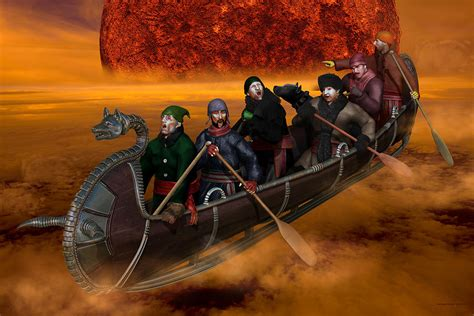

Chasse-galerie also known as "The Bewitched Canoe" or "The Flying Canoe" is a popular French-Canadian tale of Coureurs des bois who make a deal with the devil, a variant of the Wild Hunt. Its best-known version was written by Honoré Beaugrand (1848–1906). It was published in The Century Magazine in August 1892.
 The story can be traced back to a French legend about a rich nobleman named Gallery who loved to hunt. He loved it so much that he refused to attend Sunday mass. As punishment for this sin he was condemned to fly forever through the night skies, chased by galloping horses and howling wolves, in a fashion reminiscent of the Wild Hunt stories. When French settlers arrived in Canada, they swapped stories with the natives and the tale of Gallery was combined with a First Nations legend about a flying canoe. In time bark canoes became associated with French-Canadian culture as well; when some of the earliest French-Canadians arrived in New York City, they were reported to have landed on the banks of the Hudson River to "the amazement and admiration of the people, who had never seen bark canoes in their waters before".